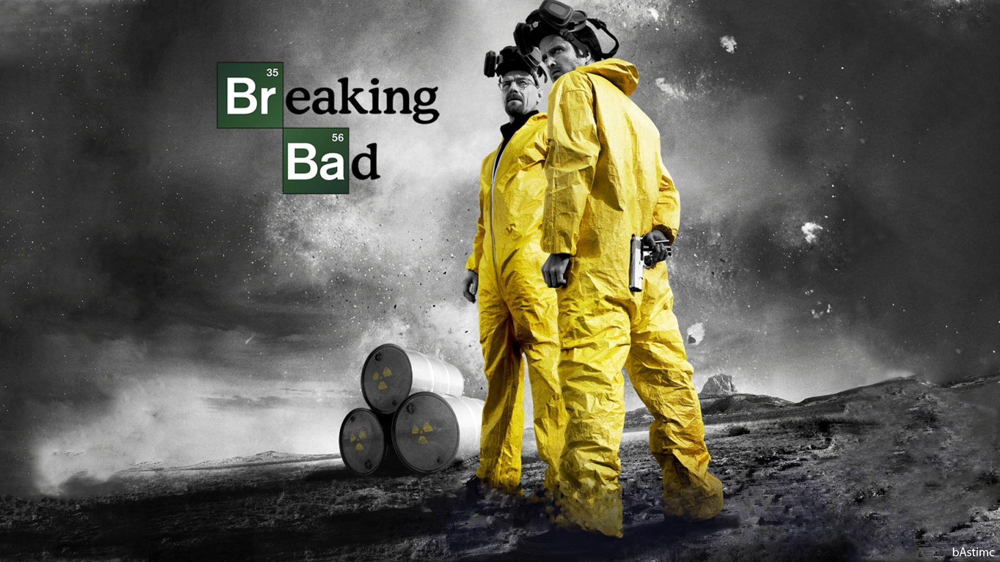

A Breaking Bad egy amerikai neo-western bűnügyi drámasorozat, amelyet Vince Gilligan készített és készített az AMC számára.
A sorozat Albuquerque-ben, Új-Mexikóban játszódik és forgatott, és Walter White (Bryan Cranston) nyomában áll, aki túlképzett, lehangolt középiskolai kémiatanárt követ, aki nemrégiben a harmadik stádiumú tüdőrák diagnózisával küzd. White bűnözői élethez fordul, és egykori diákjával, Jesse Pinkmannal (Aaron Paul) társként dolgozik, hogy metamfetamint állítsanak elő és terjesztenek, hogy biztosítsák családja pénzügyi jövőjét halála előtt, miközben a bűnöző alvilág veszélyeit kezeli.

| Szezon | Rotten Tomatoes | Metakritikus |
|---|---|---|
| 1 | 86% (43 értékelés) | 73 (27 értékelés) |
| 2 | 97% (36 értékelés) | 84 (19 értékelés) |
| 3 | 100% (36 értékelés) | 89% (15 értékelés) |
| 4 | 100% (36 értékelés) | 96% (15 értékelés) |
| 5 | 97% (99 értékelés) | 99% (22 értékelés) |